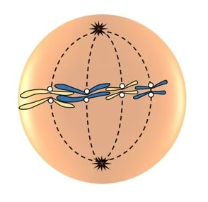
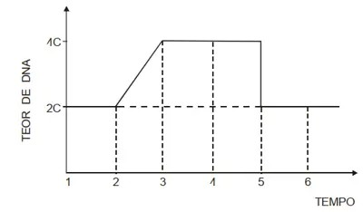

Exercicios:
Mitose
1:
A mitose é uma das etapas do ciclo celular. Indique a alternativa que apresenta um processo que não ocorre na fase mitótica, e sim na interfase.1) O envelope nuclear se fragmenta.
2) Ocorre a formação do fuso mitótico.
3) Os cromossomos se reúnem na placa metafásica.
4) O nucléolo desaparece.
5) Há duplicação do material genético.
Angulos no triangulo
2:
Qual estágio da mitose está ilustrado abaixo? 1) Prófase.
2) Metáfase.
3) Anáfase.
4) Citocinese.
5) Telófase.
3:O gráfico mostra a variação da quantidade de DNA de uma célula somática durante as diversas fases de sua vida.
 No gráfico, a mitose propriamente dita e a interfase correspondem, respectivamente, aos períodos de tempo:1) 4 a 6 e 1 a 4.
2) 2 a 4 e 3 a 5.
3) 3 a 5 e 1 a 3.
4) 1 a 3 e 4 a 6.
5) 2 a 5 e 3 a 5.
4:
1) Seu ciclo de vida é heteroxeno, porque possui dois hospedeiros: o homem, que age como hospedeiro intermediário, e o mosquito Culex fatigans, como hospedeiro definitivo
2) Esses vermes são parasitas intestinais, porém alimentam-se de sangue, causando uma anemia profunda, típica da doença.
3) A principal forma de contaminação no meio rural faz-se pela ingestão de seus ovos embrionados, que foram eliminados pelas fezes de seus hospedeiros, tanto o definitivo quanto o intermediário.
4) Além da higiene alimentar e do uso de calçado, a vacinação da população também é uma importante medida profilática para se evitar a ocorrência dessa doença.
5:
A ancilostomose, ou ancilostomíase, é uma doença causada por parasitas das espécies Necator americanus e Ancylostoma duodenale. Esses organismos são classificados como:1) protozoários.
2) bactérias.
3) platelmintos.
4) nematoides.
5) artrópodes.
Gabarito
1: 5
2: 2
3: 1
4: 2
5: 4
Tabela de Acertos
Mitose
95%
Meiose
81%
Doenças
90%
Genética
64%
Histologia
98%
Reinos
80%
Gabarito no Final da Página
Instruções da Prova
1. Você terá 300 segundos para responder cada pergunta.
2. Cada pergunta terá apenas uma resposta.
3. Você não podera selecionar nenhuma opção quando o tempo acabar.
4. Você não pode sair do Quiz enquanto estiver jogando.
5. Você receberá sua nota com base em suas respostas corretas.
Prova BioLab
Tempo Restante
300
Você completou a Prova!
Deixe seu feedback